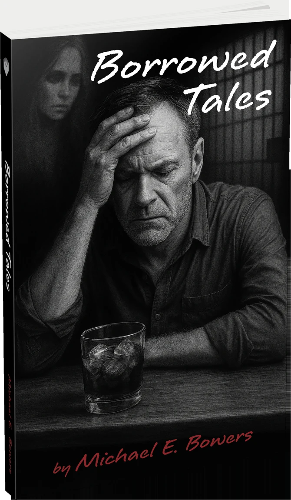

PSYCHOLOGICAL FICTION
Borrowed Tales
At Leo’s bar, Sam Morris retraces a life marked by regret, fractured memories, and unexpected connection.
About the book
Through flashbacks and barroom conversations, Sam wrestles with the choices that shaped his life. Erin, the bartender, becomes a steady presence as he searches for belonging.